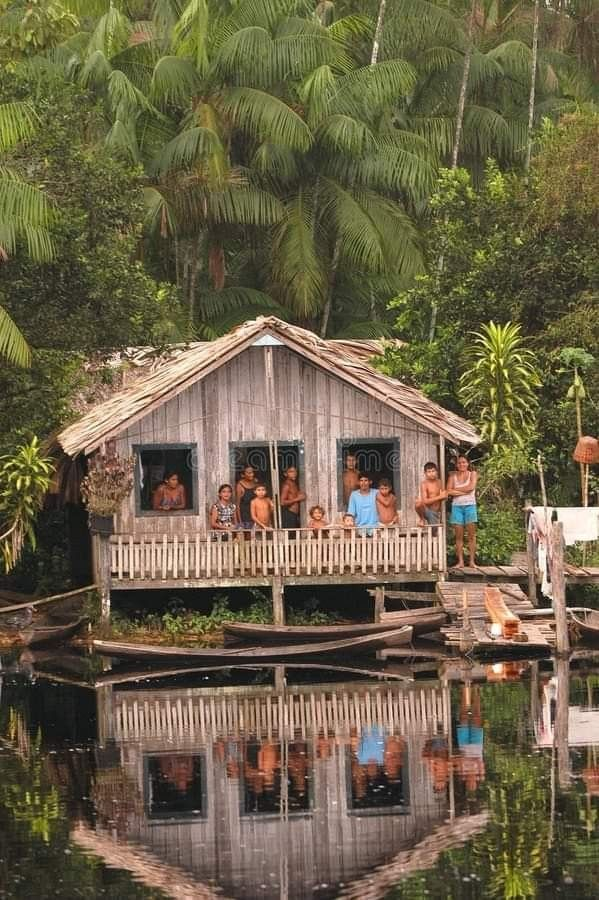

Region Nordeste de Brazil

Los primeros portugueses que llegaron a Brasil en 1500 desembarcaron primero en Bahía, en la region Noreste. Debido a esto, esta es la region mas antigua colonizada en el pais.
La vegetación del noreste varia entre manglares, caatinga, cerrado, restingas y Mata Atlantica. La región alberga varias especies endémicas y en peligro de extinción.
Ademas el turimos es una de las principales fuentes economicas del Noreste. Sus ciudades costeras cuentan con playas paradisiacas, atrayendo la atención de turistas de todo el mundo.
Sin embargo, debido a su ubicación es un clima semiárido, es común que algunas ciudades pasen seis meses o más sin lluvias, lo que provoca que los ríos se sequen completamente
durante este período. Además, el Noreste enfrenta diversas problemáticas socioeconómicas, como la falta de diversidad en la agricultura y la industria, sequías constantes, escasez de
agua potable, falta de saneamiento básico y deficiencias en el suministro de electricidad.
Las buenas tierras rurales son escasas y se concentran cerca de la costa. Como resultado, la mayoría de las ciudades del noreste están ubicadas cerca del mar, lo que hace que la población
este desigualmente distribuida. A pesar de esto, la región alberga el 28% de la población total del país.
Por otro lado, el Noreste es una región rica en cultura y gastronomía. Es famoso por su
comida tradicional
,
festividades,
religiosidad
,
playas y artesanías.
Estados de la región Noreste
| Estados |
Capitales |
| Alagoas |
Maceió |
| Bahia |
Salvador |
| Ceará |
Fortaleza |
| Maranhao |
Sao Luis |
| Paraíba |
Joao Pessoa |
| Pernambuco |
Recife |
| Piauí |
Teresina |
| Rio Grande do Norte |
Natal |
| Sergipe |
Aracaju |
Datos de la región Noreste
| Área |
1,554,291 km² |
| Población |
57,071,564 |
| Ciudad más grande |
Salvador |
| Clima |
Tropical; semi-arid; semi-equatorial |
| Bioma |
Caatinga |
| Economía principal |
Agriculture, livestock, industrialized goods, tourism |
| Comida tradicional |
Acaraje, Baiao de Dois, Vatapá, Caruru, Bolo de Rolo |